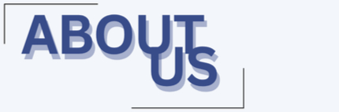

Welcome to the TCHS Science Olympiad Website! Science Olympiad (SciOly) is an academic, track meet-style competition featuring 23 STEM events across various fields, including biology/life science, earth and space, physical science and chemistry, technology and engineering design, and inquiry & nature of science. Each SciOly team is composed of 15 students who collaborate in various events. Top-performing teams have the opportunity to win medals in competitions. Science Olympiad helps promote curiosity about science and collaboration, encouraging students to work together and grow in their knowledge.
TCHS's SciOly team was founded in 1998, competing in Division C. We have two teams consisting of 15 students each, and we participate in invitational, regional, and state competitions throughout the year. During competitions, partners compete in scheduled event blocks, much like a typical school day. Outside of competitions, we value a strong sense of community, and often have team bonding, team dinners, and celebrations. As one of the most well-known and academically rigorous clubs at our school, we are both welcoming and competitive, with consistently high rankings at our regional and state tournaments. We expect our members to stay dedicated, prioritize the team, and attend all competitions!
Check out our latest news here!